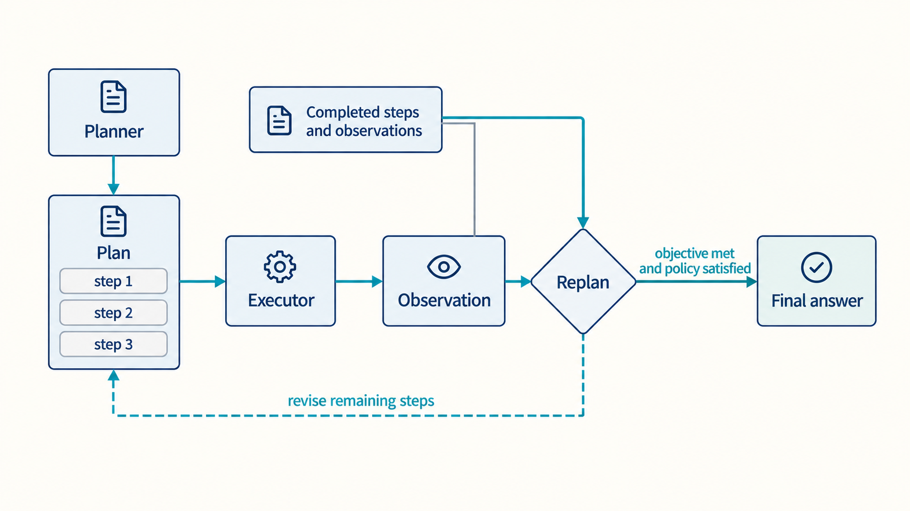
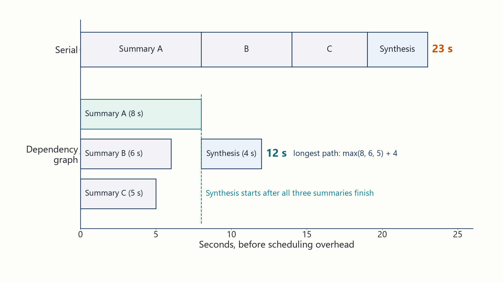
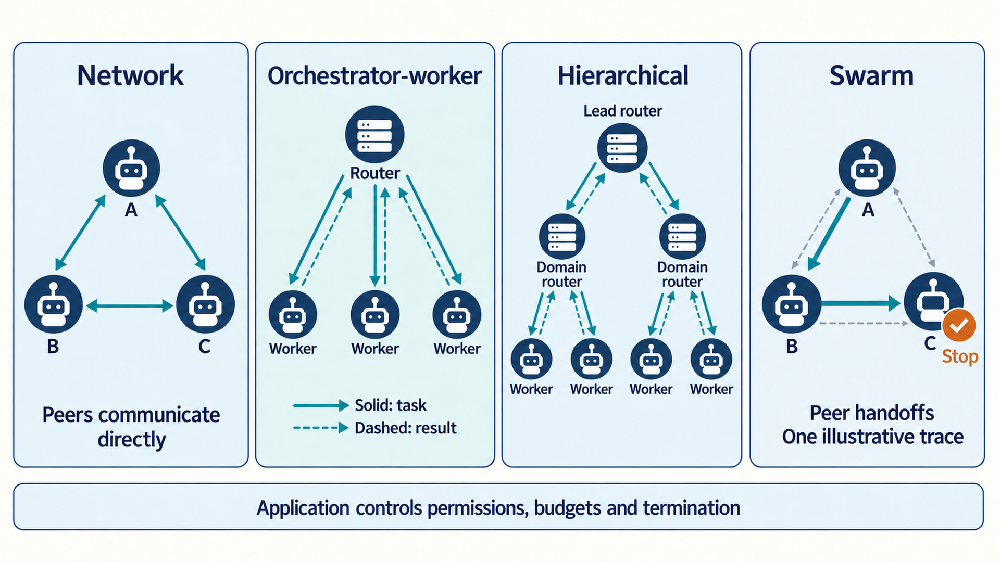

10 Planning and coordinating agents
A tool-using agent can choose one action after each observation, as Chapter 9 showed. Some tasks also need a visible account of the work still to do: which sources remain to be checked, which results depend on others, and which steps can run together. Planning makes that work inspectable before or during execution. Dividing it among agents adds a further choice about who acts and how control returns.
![Eight section scenes are arranged around plans and dependencies, feedback, and agent coordination. Strategy choice contrasts a checked plan with choosing actions after observations; CodeAct is a code action format, not a planner. Plan-and-Execute uses tools, while Plan-and-Solve reasons from supplied facts. ReWOO links planned E1 and dependent E2 outputs to a solver; missing E1 blocks E2. LLMCompiler overlaps ready independent tasks and waits for required results. Plan-and-Act revises unfinished work after observations within a run. Reflexion passes a fallible lesson between attempts without changing model weights, with an independent check and an attempt limit. A single agent is compared with a router and specialized agents. A checked task handoff returns a worker result through a completion check to its caller; later tool actions still need permission. The sketches omit execution details taught in the text.](../assets/fig-m1-c10-f01.png)
Planning and coordination answer different questions. A plan describes proposed work and dependencies. Coordination assigns work, transfers the needed context, and checks returned results. Either still uses the execution checks, permissions, budgets, and stopping rules from Chapter 9.
10.1 Choosing a planning strategy
The first choice is whether the next useful step can be identified before a tool returns. ReAct in Section 9.3 chooses again from each observation. An explicit plan is useful when remaining work needs review, dependent steps need ordering, or independent work could overlap.
A planner is the model or software component that proposes steps and their order from a goal and the available state. The application checks the proposed work before execution. A planning policy is the rule or model instruction used to make those choices.
The following approaches organize different parts of that work:
- Plan-and-Execute writes an initial plan, then carries out its steps. Plan-and-Solve is a related prompting method that asks a model to plan and solve a reasoning problem within generated text.1
- ReWOO writes tool instructions ahead of observations and uses variables to refer to results that will arrive later.2
- Plan-and-Act separates high-level planning from concrete environment actions. Its replanning variant revises the remaining plan after observations.3
- LLMCompiler organizes function calls as a dependency graph and dispatches ready work in parallel.4
Reflexion provides feedback between attempts rather than a particular way to order tasks.5 CodeAct, taught in Section 9.6, supplies an action format: executable code. These techniques can complement a planning method. They are not interchangeable planners.
The comparison table includes the ReAct baseline and these related techniques. It distinguishes their roles, task fit, and cost or failure risk. Sections 10.2–10.6 develop the planning and feedback mechanisms; Sections 10.7–10.8 explain distributing work among agent loops.
| Method | Control structure | Best fit | Primary cost or risk |
|---|---|---|---|
| ReAct | One action after each observation | Exploratory tasks and uncertain scope | Sequential latency, token use, and loop risk |
| Plan-and-Execute | Create a full plan, then execute its steps | Stable tasks where the plan can be reviewed before action | Stale plans when observations invalidate later steps |
| Plan-and-Solve | Prompt a reasoning plan, solve it, then extract an answer | Supplied-fact problems with dependent reasoning steps | Missing or incorrect reasoning; no access to missing facts |
| ReWOO | Create variable-linked tool work before observations return | Tasks whose tool sequence can be planned before observations | Unexpected observations can invalidate a fixed plan; revising the tool plan needs an added control path |
| Reflexion | Generate and store a reflection from feedback between attempts | Tasks with informative, trustworthy feedback | Retry cost and evaluator-driven error reinforcement |
| Plan-and-Act | Separate high-level planning from execution, optionally replan from observations | Clear phases whose details change with observations | Replanning call cost and errors in revised plans |
| LLMCompiler | Stream a dependency graph and dispatch ready nodes | Independent subtasks with a merge step | Dependency correctness and harder traces |
| CodeAct | Emit executable code as the action | Loops, data transformation, and library composition | Untrusted-code execution requires isolation |
The choice follows the task. Unknown next actions favor observation-driven decisions. Predictable work can use an upfront plan. Dependencies determine which calls must wait, while measured execution cost determines whether parallel scheduling is worthwhile. A plan that is easy to inspect can still be wrong, incomplete, or outside the caller’s permissions.
10.2 Plan-and-Execute and Plan-and-Solve
Suppose a user asks an application to compare the return windows for headphones and monitors. Both policy sources are available, and the required product categories are known. The application can propose the work before retrieving either policy: find the two sources, extract the relevant conditions, compare the windows, and return an answer with citations.
In a Plan-and-Execute design, planning produces a list of proposed steps. The application checks required inputs, tool availability, permissions, and dependencies. An executor then runs permitted steps and stores each result. A later step receives the earlier results it needs. Completion requires the requested answer and its policy checks, not just an empty work list.
For this illustrative policy comparison, one execution is:
- The planner proposes finding the headphone and monitor policies, then comparing their conditions and deadlines.
- The application permits the two read operations. Each returns an approved passage with a source reference.
- An extraction step returns the product, deadline, and conditions from each passage.
- The comparison step checks that the conditions match the question and drafts the answer. Final validation checks both product coverage and citation support.
The plan makes missing work visible before execution. It does not make the passages relevant or the extraction correct. An empty search result blocks comparison. If a policy introduces an unforeseen condition, the application needs clarification, a revised plan, or a fallback rather than continuing with the original assumptions. Section 10.4 develops that revision path. An upfront plan fits predictable work, but can waste planning effort when the first observation changes the task.
Plan-and-Solve addresses a smaller problem: a model can omit a needed reasoning step even when the prompt supplies all the facts. Wang et al. ask the model to devise a plan and carry out its reasoning. Their evaluation then uses another prompt to extract the answer. PS+ adds guidance about relevant variables and intermediate calculations to address calculation errors as well as missing steps.6 This is prompt-based reasoning, not a tool executor or a saved application work queue.
Example 10.1: A plan within a reasoning prompt
Suppose a prompt says that three cartons each contain 12 headphones and that five headphones are removed. It asks how many remain. The plan first finds the total, 3 × 12 = 36, then subtracts the removed units, 36 − 5 = 31. The second calculation depends on the first. Skipping the multiplication would use the stock in one carton rather than all three.
Result: The answer is 31 headphones. The model used the supplied facts; no inventory service was called or stock changed. Application code can check the arithmetic directly. This illustrates the missing-step problem, not a measured benefit of the prompt.
A request that needs current or private policy text still needs a permitted way to obtain it. Planning instructions alone do not supply missing facts. The paper’s reasoning-task results therefore do not establish tool-use reliability. For an application, the relevant comparison is whether plan-first reasoning or execution improves checked answers enough to justify its extra work.
10.3 ReWOO: tool plans with output variables
An upfront plan can know that a document must be read without knowing its identifier yet. ReWOO represents that missing value with an evidence variable. Its planner writes the tool work before seeing observations, workers obtain the results, and a solver combines the plan and evidence into an answer.7
A later tool instruction can refer to an earlier variable. The application substitutes the actual result when it becomes available. That dependency does not require another planner call merely to copy a returned value into the next tool’s argument. It also does not make the two calls independent or automatically parallel.
For the same policy comparison, suppose the search tool returns a policy reference and a separate read tool returns its text. The following is a plan trace, not an executable program:
- The planner writes
E1 = search_policy("headphones")andE2 = read_policy(E1.policy_ref). - It also writes
E3 = search_policy("monitors")andE4 = read_policy(E3.policy_ref), followed by the instruction to compare the evidence inE2andE4. - Workers run the permitted searches and bind
E1andE3to their results. Each read waits for its own policy reference, then supplies the corresponding text. - The solver receives the question, plan, and filled evidence variables. It returns a comparison grounded in the two passages.
The changing policy references are data in an already written plan. The planner did not inspect the first result to invent a new next action. This is the distinction from ReAct’s observation-driven loop. The ReWOO paper uses numbered evidence slots such as #E1; E1 through E4 are simplified labels for this trace.
If a search returns no allowed match, the corresponding read has no valid reference. In an application, a failure check must block that read and choose recovery or an evidence-gap response. A solver must not treat an unfilled variable as evidence. These are application requirements, not a guarantee supplied by the method.
ReWOO fits work whose tool sequence can be described in advance, even when later arguments depend on earlier results. Xu et al. identify a limit when the environment is too unknown to plan useful work ahead of observations.8 Tests should compare the checked result, missing or wrongly filled slots, planner calls, total tokens, and recovery cost with the observation-driven baseline.
10.4 Plan-and-Act: revising plans from observations
The ReAct loop in Section 9.3 chooses again after each observation without requiring a separate remaining-work list. A stored plan makes unfinished work visible and lets planning and execution use different model calls. Its revision must still follow the objective and the latest permitted observations.
Erdogan et al. study Plan-and-Act for web navigation. A planner writes high-level steps; an executor turns them into concrete actions using the current page. Their dynamic replanning variant updates the remaining plan after each executor step, using current state and previous plans and actions. The paper also trains separate planner and executor models from generated and grounded examples. That training setup is part of the method, not supplied by adding a generic replanner function.9
For an illustrative policy lookup, the initial plan is to search and open the matching product policy. Search returns a monitor policy first and the headphone policy second. The planner now replaces the vague remaining step with an instruction to open the headphone result identified in the observation. The executor opens that result, and the application checks the product and source before accepting the answer. A changed instruction is useful only if the observation supports it.
The figure shows this separation of a plan, completed work, observations, and revision. It is a generic application design, not a reproduction of the paper’s trained system.

The replan node is the defining addition. A static plan-and-execute system cannot absorb newly discovered constraints without a separate correction path.
The following generic replanner applies this distinction between remaining work and a final response. It does not implement the paper’s training or browser executor.
See Example 10.2 for the implementation.
Example 10.2: A replanner returns either remaining work or a final response.
This abbreviated Python example assumes that state has the fields read below and that objective_satisfied, policy_satisfied, compose_answer, and revise_using are supplied by the application. It returns a Plan or Response. The application validates the incoming state before calling it. A final response needs both objective and policy checks. The revise_using helper must check that its proposed steps are executable and unfinished, using the objective, completed steps, and observations. The fragment checks only that its result is a nonempty list of nonblank strings. It raises ValueError on an empty or malformed result for the surrounding workflow to stop or escalate. It does not turn an empty plan into success.
from dataclasses import dataclass
@dataclass
class Plan:
steps: list[str]
@dataclass
class Response:
response: str
def replan(state) -> Plan | Response:
if objective_satisfied(state) and policy_satisfied(state):
return Response(response=compose_answer(state))
remaining = revise_using(
objective=state.objective,
original_plan=state.original_plan,
completed=state.past_steps,
observations=state.observations,
)
if (not isinstance(remaining, list) or not remaining
or any(not isinstance(step, str) or not step.strip()
for step in remaining)):
raise ValueError("no valid unfinished steps")
return Plan(steps=remaining)Plan-state invariant
The plan should contain only unfinished work. Completed steps and their observations belong in execution history, and the final response should be produced only when the objective and policy checks pass.
Replanning can recover from a stale plan but adds model calls and can introduce new errors. Evaluation compares checked task outcomes, invalid revisions, calls, latency, and total cost with a fixed plan and with the ReAct baseline on the same tasks. A failed objective or policy check cannot become success merely because the revised list is empty.
10.5 LLMCompiler: dependency-aware scheduling
The replanner in Section 10.4 returns remaining steps or a final response. Running the steps one at a time makes independent tasks wait, which can increase wall-clock time. A dependency graph states which outputs each task needs, allowing a scheduler to run ready independent tasks concurrently and combine results after their prerequisites finish.
- Task DAG: A directed acyclic graph whose nodes are executable tasks and whose edges state that one task depends on another task’s output.
Kim et al.10 report speed and cost improvements from LLMCompiler on the tasks and tool sets in their study. Its planner can stream tasks and dependencies, its scheduler replaces references to earlier outputs with their actual values, and its executor runs ready calls. A final combination step produces an answer or requests more planning. These results are not universal guarantees. Parallel calls shorten latency only when resources permit overlap, and they need not reduce the number of tool calls or their price.
Let \(G\) be the task graph, \(\pi\) one dependency-respecting path through it, and \(t_v\) the duration of task \(v\). Even with unlimited workers, the graph cannot complete sooner than its longest dependency path:
\[ T_{DAG}\ge\max_{\pi\in\mathrm{paths}(G)}\sum_{v\in\pi}t_v \tag{10.1}\]
Here, \(T_{DAG}\) is the elapsed time to finish the graph and all durations use seconds. Each path follows task dependencies. This is a lower-bound latency model for the declared graph and task durations. Scheduling overhead, resource contention, and retries can add time. A final synthesis or join that takes time must be a node in the graph, as in the example below. Only work outside the graph adds a further join cost.
Example 10.3: Critical path versus serial execution
Three independent document summaries take 8, 6, and 5 seconds. A final synthesis depends on all three and takes 4 seconds. Assume at least three available workers, unchanged task durations, and no scheduling overhead or shared-resource conflict.
- Serial execution takes 8 + 6 + 5 + 4 = 23 seconds before overhead.
- In a dependency graph, the three summaries can start together.
- The longest prerequisite path is max(8, 6, 5) + 4 = 12 seconds.
Result: The idealized graph reduces the dependency-limited time from 23 seconds to 12 seconds.
Interpretation: The gain exists because the summaries are independent. Mislabeling a real dependency can make the faster schedule produce an invalid result.
The timeline below depicts these same three summaries and their final synthesis, using the same durations and assumptions.

The scheduler needs a concrete rule for determining which unfinished nodes may run at scheduler time t.
\[ \mathrm{Ready}(t)=\{v:v\notin\mathrm{Done}(t),\mathrm{Pred}(v)\subseteq\mathrm{Done}(t)\} \tag{10.2}\]
Here, \(\operatorname{Done}(t)\) denotes completed nodes, while \(\operatorname{Pred}(v)\) represents predecessor nodes. In the batch scheduler below, the expression is checked only after the previous batch has completed. It selects unfinished nodes whose predecessors are finished. An asynchronous dispatcher must also exclude nodes already running. Readiness proves dependency completion only. Authorization, rate limits, and safe concurrency require independent checks.
Example 10.4: Ready nodes after one dependency completes
A graph contains A -> B, A -> C, and both B and C -> D. Only A is complete.
- B’s predecessor set is {A}, which is contained in Done(t).
- C’s predecessor set is also {A}, which is contained in Done(t).
- D requires both B and C, so D is not ready.
Result: The ready set contains B and C, allowing them to run concurrently.
Interpretation: The scheduler exposes parallelism already present in the dependency graph. It cannot safely invent independence that the plan did not establish.
The following loop turns dependency readiness into a dispatch rule.
See Example 10.5 for the implementation.
Example 10.5: A scheduler dispatches only tasks whose dependencies are satisfied.
This abbreviated Python loop assumes task objects with id and dependencies, an initially empty results mapping, and application-supplied run_in_parallel and joiner. The runner returns one successful result per dispatched task and raises on execution failure. The loop rejects duplicate task IDs, references to missing tasks, cycles, and incomplete batches. It returns the joiner’s answer only after all tasks succeed. Authorization, timeouts, cancellation, and resource-safe concurrency belong in the runner and are not implemented here.
class InvalidPlan(ValueError):
pass
class TaskFailure(RuntimeError):
pass
def ready_tasks(tasks, results):
return [
task for task in tasks
if task.id not in results
and all(dep in results for dep in task.dependencies)
]
task_ids = [task.id for task in tasks]
if len(task_ids) != len(set(task_ids)):
raise InvalidPlan("duplicate task ID")
if any(dep not in task_ids
for task in tasks for dep in task.dependencies):
raise InvalidPlan("missing dependency ID")
if results:
raise InvalidPlan("this example requires empty initial results")
while len(results) < len(tasks):
batch = ready_tasks(tasks, results)
if not batch:
raise InvalidPlan("cycle in unfinished tasks")
batch_results = run_in_parallel(batch, results)
if (not isinstance(batch_results, dict)
or set(batch_results) != {task.id for task in batch}):
raise TaskFailure("batch did not return every dispatched result")
results.update(batch_results)
answer = joiner(results)The loop keeps invalid plan structure separate from an incomplete execution batch. It rejects missing IDs before dispatch and reports a cycle when unfinished tasks have no ready node. A full scheduler also records each task’s success, failure, or cancellation separately. A failed prerequisite must never count as a completed successful dependency. Its dependents are cancelled or blocked according to policy. These outcomes need different repairs and should remain distinct in the trace.
Graph evaluation
Graph evaluation tests dependency correctness, peak concurrency, critical-path latency, joiner faithfulness, cancellation, and partial failure. An end-answer score alone cannot reveal whether apparent speed came from skipping required work.
The graph must also declare which resources each task reads and writes, how cancellation is propagated, and what the join step requires. An undeclared state change can make two apparently independent nodes conflict. A sequential reference run provides a comparison until tests show that the parallel schedule preserves the required state and result.
10.6 Reflexion: feedback between attempts
A plan can execute as written and still produce the wrong answer. Repeating the attempt with no information about its failure can repeat the same mistake. Reflexion adds a feedback note that the agent receives on a later attempt. Shinn et al. separate the acting agent, an evaluator of the attempt, and a reflection step that turns the attempt and feedback into a verbal correction. Model weights stay unchanged.11
The process has three results to keep distinct: the attempted answer or action trace, the evaluator’s finding, and the generated reflection. The finding is evidence about the attempt. The reflection is a proposed lesson, which may itself be wrong. The next attempt uses that lesson along with the task and permitted evidence.
Suppose the policy-comparison agent returns a headphone deadline but cites the monitor policy. An illustrative sequence is:
- A checker compares the product in the question with the cited passage and rejects the attempt.
- The reflection step writes, “I selected a similar title without checking the product. On the next attempt, read the passage and verify the category before using its deadline.”
- The application keeps that note with this task’s attempt history. The next attempt receives it and obtains the correct product’s passage.
- The checker evaluates the new answer independently. The retry stops on a pass, the attempt limit, or another stop condition.
This trace illustrates feedback across attempts, not a measured improvement. A bad checker could produce an unhelpful lesson, and a new attempt can still fail. Evaluation therefore compares checked outcomes and total cost with retries that do not receive reflection notes. Raising the evaluator’s score alone is insufficient if the answer remains wrong.
The feedback patterns in Chapter 8 revise a candidate against criteria. Reflexion specifically carries a verbal lesson into a later attempt. It can wrap a ReAct-style agent rather than replace its action loop. A task’s saved note also need not become permanent user memory. Reusing it across sessions requires the storage, access, correction, and deletion rules in Chapter 11.
10.7 When extra agents are warranted
A support application may need billing and account-access tools with different permissions and instructions. Placing them in separate agent loops can reduce the choices each model sees. Application code must still decide which loop runs, what it may read or change, and when the whole task is complete. The extra loops add routing calls, transferred state, and duplicated context, so evaluation must test route selection, state transfer, loop detection, and incomplete results after worker failure.
- Multi-agent system: A controlled composition of two or more agent loops with explicit communication, state access, routing, and termination rules enforced by the surrounding application.
Four recurring limitations provide concrete reasons to consider that composition:
- Tool overload: one agent prompt can contain so many similar tools that selection degrades.
- Context bloat: unrelated domain instructions and evidence compete in one context window.
- Serial bottleneck: independent subtasks dominate wall-clock time when executed by one loop.
- Separate teams or permissions: different domains need different responsible teams, permissions, release schedules, or compliance rules.
Escalation test
A decision to add agents needs a task requirement or measured single-agent limit, a prediction of which multi-agent pattern addresses it, and tests for the new failure modes.

In an orchestrator-worker pattern, a central router selects a worker and receives its result. A hierarchy adds routers for separate domains. In a network, agents have permitted peer links. Here, swarm means one worker selects the next worker without a central router. It does not mean that every worker runs at once. These categories can overlap: network describes the available links, while this use of swarm describes how control passes along them. The figure sketches connections and control choices, not four mutually exclusive topologies or complete runtime graphs. The table compares task dependencies, permissions, routing delay, and failure handling. These conditions guide an engineering choice; they do not guarantee the best pattern.
Anthropic12 reported that a research system using Claude Opus 4 as lead agent and Claude Sonnet 4 workers outperformed single-agent Claude Opus 4 by 90.2 percent on its internal research evaluation. Separately, it reported about 15 times as many tokens for multi-agent systems as for chat interactions. The different baselines matter: 15 times is not the reported token ratio for the evaluated single-agent comparison. The report also notes that shared-context tasks and tasks with many dependencies between agents can fit this approach poorly.
| Pattern | Who selects the next agent? | Conditions that can favor the pattern | Risks to test |
|---|---|---|---|
| Network | Routing policy selects; peer links alone do not choose | Small exploratory debate or research groups | A fully connected set of N agents allows N(N-1) directed peer links and many possible interactions |
| Orchestrator-worker | A central router | Central routing across specialized workers | Router latency, misrouting, and supervisor drift |
| Hierarchical | Routers at multiple domain levels | Large organizations or many isolated domains | Multiple routing layers, latency, and error propagation |
| Swarm | The active worker hands off directly | Stateful conversations with infrequent domain shifts | Ping-pong handoffs and hidden global completion state |
Debate-style evaluation
The course’s evaluation lecture describes a debate-style way to judge candidate answers. One role argues for answer A, another for answer B, and a referee judges both against the scoring rules. This can be a fixed evaluation workflow, not separate tool-using agent loops. It illustrates a different reason to divide model work: comparing criticisms of the same answer rather than assigning independent product tasks.
Agreement does not establish correctness. The referee’s decisions still need comparison with trusted labels or expert review, calibration, and cases that expose shared mistakes. The debate adds calls and cost; its value is whether it improves checked judgments over a simpler evaluator, not whether it produces longer arguments.
10.8 Agent handoffs and return control
A pattern describes the possible communication paths. A concrete system still needs a mechanism for changing the active agent loop without losing user intent, authorization, or progress. A handoff identifies the destination, transfers only the required state, records the output expected from that loop, and states where control returns.
Application code checks the destination, task, completion criteria, return route, and authorization before changing the active loop. It loads only evidence the destination may read and records the accepted handoff with the resulting state. The typed record below is an application design, not an MCP message type. MCP standardizes tool and context exchanges (Section 9.7), not this record’s task and return-control rules.
See Example 10.6 for the implementation.
Example 10.6: The checked handoff retains the task and return route with evidence loaded under application access and size limits.
This abbreviated Python 3.10-or-later example needs application-supplied helpers and a state object.
The supplied helpers have these required behaviors. validate_destination rejects unknown workers. validate_authorization checks that the authority covers this task and destination. load_refs checks access to each reference and enforces the application’s payload-size limit. transfer_control must save the accepted record and changed state together, or fail without applying either.
An empty evidence list is allowed for a task that needs no external evidence. Literal documents labels but does not validate them at runtime. The explicit checks reject empty task fields, invalid return labels, and malformed reference lists.
Helper failures before transfer_control leave the active agent unchanged. The fragment does not run a worker or grant permission for its later tool actions, which need the checks from Section 8.7.
from dataclasses import dataclass
from typing import Literal
@dataclass
class Handoff:
destination: Literal["billing", "auth", "notifier"]
reason: str
task: str
completion_criteria: str
evidence_refs: list[str]
authorization_ref: str | None
return_to: Literal["orchestrator", "user", "none"]
def accept_handoff(handoff: Handoff, state):
validate_destination(handoff.destination)
for value in (handoff.reason, handoff.task, handoff.completion_criteria):
if not isinstance(value, str) or not value.strip():
raise ValueError("handoff fields must be nonempty strings")
if handoff.return_to not in {"orchestrator", "user", "none"}:
raise ValueError("invalid return route")
if not isinstance(handoff.evidence_refs, list) or any(
not isinstance(ref, str) or not ref.strip()
for ref in handoff.evidence_refs
):
raise ValueError("invalid evidence references")
validate_authorization(
handoff.authorization_ref, handoff.task,
destination=handoff.destination,
)
context = load_refs(
handoff.evidence_refs, destination=handoff.destination,
authorization_ref=handoff.authorization_ref,
)
return state.transfer_control(
active_agent=handoff.destination,
bounded_context=context,
task=handoff.task,
reason=handoff.reason,
completion_criteria=handoff.completion_criteria,
authorization_ref=handoff.authorization_ref,
evidence_refs=list(handoff.evidence_refs),
return_to=handoff.return_to,
)For an illustrative handoff, an orchestrator sends billing the task “check this order’s refund eligibility”, its policy reference, and the completion criterion to return eligibility with the policy source. The accepted state retains that task, authority reference, evidence references, and the route back to the orchestrator. A rejected authority reference stops execution before evidence is loaded or control changes. After the worker returns, the orchestrator checks the criterion before marking the task complete. The table lists further failure controls, such as handoff budgets and worker-status checks, that this fragment does not implement.
| Failure | Observable symptom | Mitigation |
|---|---|---|
| Routing oscillation | Agents hand control back and forth without new evidence | Handoff budget, visited-route state, and loop detection |
| Context loss | Destination repeats work or misreads user intent | Typed task, evidence references, constraints, and completion criteria |
| Supervisor drift | Central router begins solving domain work itself | Narrow router outputs and separate route-accuracy evaluation |
| Hidden partial failure | One worker fails but synthesis sounds complete | Per-worker status, required-result set, and incomplete-result response |
| Permission amplification | Worker receives broader permissions than the originating task requires | Reduce permissions to the task and destination, then recheck each proposed action |
A whole-run trace connects delegated tasks, not just accepted transfers. Each task has an identifier, a parent task, completion criteria, and a status. Tool-call records link to that task and retain permitted argument details, result status, duration, and failure or stop reason. The return record links the worker’s result to the caller’s completion check. This lets an evaluator follow a wrong final answer back through delegation and tool execution, or identify work left unfinished after a worker fails. Chapter 13 develops logging and trace records; the handoff record alone is not that complete trace.
A bounded handoff carries only the state needed by the next agent loop. It ends with a checked return or a recorded failure, not merely a message sent to a worker. Reusing selected information in later sessions creates the separate storage problem in Chapter 11.
Chapter conclusion
Planning organizes proposed work; execution checks whether each permitted step succeeded. Coordination determines which agent loop receives a task and what counts as a valid return. More planning or more agents are useful only when their checked results justify the added calls, context, and failure paths. Chapter 11 examines a different decision: which information from these runs may be reused in later sessions.
Wang, L., Xu, W., Lan, Y., Hu, Z., Lan, Y., Lee, R. K.-W., & Lim, E.-P. (2023). Plan-and-Solve prompting: Improving zero-shot chain-of-thought reasoning by large language models. In Proceedings of the 61st Annual Meeting of the Association for Computational Linguistics, Volume 1: Long Papers. Association for Computational Linguistics. https://arxiv.org/abs/2305.04091. The method first generates a plan and then executes its steps.↩︎
Xu, B., Peng, Z., Lei, B., Mukherjee, S., Liu, Y., & Xu, D. (2023). ReWOO: Decoupling reasoning from observations for efficient augmented language models. arXiv. https://arxiv.org/abs/2305.18323. ReWOO separates planning from tool observations and binds outputs through variables.↩︎
Erdogan, L. E., Lee, N., Kim, S., Moon, S., Furuta, H., Anumanchipalli, G., Keutzer, K., & Gholami, A. (2025). Plan-and-Act: Improving planning of agents for long-horizon tasks. In Proceedings of the 42nd International Conference on Machine Learning (PMLR 267, pp. 15419–15462). https://proceedings.mlr.press/v267/erdogan25a.html. The paper separates a planner model that writes high-level plans from an executor model that carries them out. Its replanning variant revises the plan as the task proceeds, and its results come from its evaluated web-navigation tasks.↩︎
Kim, S., Moon, S., Tabrizi, R., Lee, N., Mahoney, M. W., Keutzer, K., & Gholami, A. (2024). An LLM compiler for parallel function calling. In Proceedings of the 41st International Conference on Machine Learning. PMLR. https://arxiv.org/abs/2312.04511. The work represents function calls as a dependency graph and dispatches ready work in parallel. Its speed and cost results come from the task graphs and tool sets evaluated in the study.↩︎
Shinn, N., Cassano, F., Berman, E., Gopinath, E., Narasimhan, K., & Yao, S. (2023). Reflexion: Language agents with verbal reinforcement learning. In Advances in Neural Information Processing Systems 36. https://arxiv.org/abs/2303.11366. Reflexion uses an evaluator and a separate self-reflection step, retaining the resulting reflection in episodic memory for later trials. Its usefulness depends on task and feedback quality.↩︎
Wang, L., Xu, W., Lan, Y., Hu, Z., Lan, Y., Lee, R. K.-W., & Lim, E.-P. (2023). Plan-and-Solve prompting: Improving zero-shot chain-of-thought reasoning by large language models. In Proceedings of the 61st Annual Meeting of the Association for Computational Linguistics, Volume 1: Long Papers. Association for Computational Linguistics. https://arxiv.org/abs/2305.04091. The method first generates a plan and then executes its steps.↩︎
Xu, B., Peng, Z., Lei, B., Mukherjee, S., Liu, Y., & Xu, D. (2023). ReWOO: Decoupling reasoning from observations for efficient augmented language models. arXiv. https://arxiv.org/abs/2305.18323. ReWOO separates planning from tool observations and binds outputs through variables.↩︎
Xu, B., Peng, Z., Lei, B., Mukherjee, S., Liu, Y., & Xu, D. (2023). ReWOO: Decoupling reasoning from observations for efficient augmented language models. arXiv. https://arxiv.org/abs/2305.18323. ReWOO separates planning from tool observations and binds outputs through variables.↩︎
Erdogan, L. E., Lee, N., Kim, S., Moon, S., Furuta, H., Anumanchipalli, G., Keutzer, K., & Gholami, A. (2025). Plan-and-Act: Improving planning of agents for long-horizon tasks. In Proceedings of the 42nd International Conference on Machine Learning (PMLR 267, pp. 15419–15462). https://proceedings.mlr.press/v267/erdogan25a.html. The paper separates a planner model that writes high-level plans from an executor model that carries them out. Its replanning variant revises the plan as the task proceeds, and its results come from its evaluated web-navigation tasks.↩︎
Kim, S., Moon, S., Tabrizi, R., Lee, N., Mahoney, M. W., Keutzer, K., & Gholami, A. (2024). An LLM compiler for parallel function calling. In Proceedings of the 41st International Conference on Machine Learning. PMLR. https://arxiv.org/abs/2312.04511. The work represents function calls as a dependency graph and dispatches ready work in parallel. Its speed and cost results come from the task graphs and tool sets evaluated in the study.↩︎
Shinn, N., Cassano, F., Berman, E., Gopinath, E., Narasimhan, K., & Yao, S. (2023). Reflexion: Language agents with verbal reinforcement learning. In Advances in Neural Information Processing Systems 36. https://arxiv.org/abs/2303.11366. Reflexion uses an evaluator and a separate self-reflection step, retaining the resulting reflection in episodic memory for later trials. Its usefulness depends on task and feedback quality.↩︎
Anthropic. (2025, June 13). How we built our multi-agent research system. https://www.anthropic.com/engineering/multi-agent-research-system. The report describes an internal evaluation and token-use measurements for one vendor’s system. This vendor report does not isolate the effect of adding agents from model composition and token use.↩︎